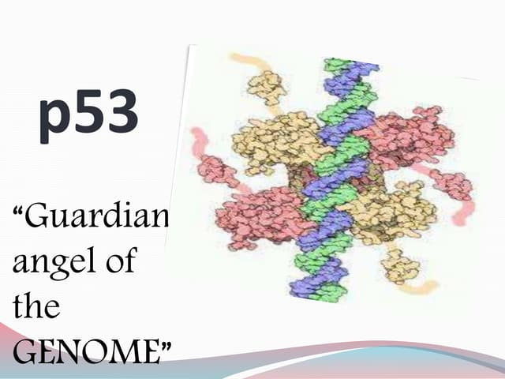

p53 is a protein that plays a crucial role in regulating the cell cycle and preventing cancer. It is encoded by the TP53 gene and is expressed in many tissues throughout the body. It is so crucial to our cells that it is often referred to as the "guardian of the genome" because of its role in maintaining genomic stability.

When DNA damage is detected, p53 becomes active and halts the progression of the cell cycle. This is done through a network of interactions with other proteins and signaling pathways. If the damage is repairable, p53 can help activate DNA repair mechanisms. If the damage is too severe, p53 can initiate programmed cell death, also called apoptosis.
p53 is one of the most important proteins in human biology because it helps protect cells from becoming cancerous. When DNA is damaged, p53 can pause the cell cycle, activate repair pathways, or trigger cell death if the damage is too severe.
Mutations in the p53 pathway are found in many cancers such as breast cancer and lung cancer. These mutations can lead to excess cell growth and tumor development. In fact, p53 is one of the most commonly mutated genes in human cancers. So studying these mutations helps researchers understand tumor growth and possible treatment targets.
Since p53 is so crucial in preventing cancer, it has been a major focus of research. Scientists are currenty investigating many aspects of p53, including how it interacts with other signaling pathways, how it is regulated, and how it might be restored in cancer therapy. Hopefully, this research will lead to new treatments and a better understanding of how our cells work.